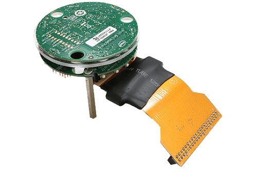

Intel S1000 CRB¶
Overview¶
The Intel S1000 ASIC is designed for complex far-field signal processing algorithms that use high dimensional microphone arrays to do beamforming, cancel echoes, and reduce noise. It connects to a host processor chip via simple SPI and I2S interfaces, to the microphone array via I2S or PDM interfaces, and to speakers via I2S. In addition, it has an I2C interface for controlling platform components such as ADCs, DACs, CODECs and PMICs.
{kind=link}
The Intel S1000 contains the following:
Dual DSP
Dual 400 MHz Tensilica HiFi3 cores
Single precision scalar floating-point
16KB 4-way I$; 48KB 4-way D$
Inference Engine
On-chip Neural Network Accelerator
Internal Memory
4MB shared embedded SRAM
64KB embedded SRAM for streaming samples in low power mode
External Memory Interfaces
Up to 8MB external 16-bit PSRAM
Up to 128MB external SPI flash
I/O Interfaces
Host I/O: SPI or USB 2.0 High-speed device
Microphone: I2S/TDM 9.6 MHz max. bit clock
Digital Microphone: 4 stereo PDM ports up to 4.8 MHz clock
Speaker: I2S/TDM 9.6 MHz max. bit clock
Instrumentation: I2C master @ 100/400 KHz
Debug: UART up to 2.4 Mbaud/s
GPIO: 8 GPIOs with PWM output capability
Note
This board is not available for purchase anymore.
System requirements¶
Prerequisites¶
The Xtensa ‘toolchain’ i.e. XCC is required to build this port. This needs a license and is available for Linux and Windows from Cadence.
In order to download the installer and the core configuration, users need to have a registered account at https://tensilicatools.com.
The toolchain installer and the core configuration can be downloaded by following the links at Tensilica Tools for Sue Creek 1
Select version RI-2018.0 and download the archive. The archive contains two files:
Installer:
Xplorer-8.0.8-linux-x64-installer.binandCore configuration
X6H3SUE_RI_2018_0_linux_redist.tgz
For JTAG based debugging, download the XOCD package as well.
A node locked license key can also be generated from the SDK portal 2.
Note
Please upgrade to RI-2018.0 version of XCC if you have previously installed the older RF-2016.4 version of XCC. The old toolchain does not support the C/C++ standards required for building Zephyr applications.
Set up build environment¶
Run the installer using these commands:
cd ~/Downloads
chmod +x Xplorer-8.0.8-linux-installer.bin
./Xplorer-8.0.8-linux-installer.bin
Please note a dialogue box should pop-up after running this command. In case the graphical installation tool does not start, the tool will revert to console based installation. The graphical tool is the preferred installation method.
If the graphical tool does not start, it means your system is missing some
packages which is preventing successful installation, most probably
gtk2-i686. You can install any missing packages with:
sudo apt-get install gtk2-i686
On Fedora 29 you might need to install the following packages:
sudo dnf install libXtst.i686 libnsl.i686 gtk2.i686
Note
The SDK is a 32 bit binary, so you will need to install 32bit compatibility packages for this work.
Follow the instructions and install the toolchain and related tools in your preferred path.
After a successful installation of the tool, run the Xtensa Xplorer (it will run automatically after installation is done) and follow the steps to install the software keys you have downloaded from Tensilica Tools for Sue Creek 1
Note
The license key you have requested is tied to the Ethernet MAC address on the
host system. The license manager expects a network device named eth0 or
eth1. On many modern Linux distribution the naming scheme is different
and determined automatically. You will need to either force the naming to
follow what the license manager expects or create a dedicated ethernet device
for this to work.
On Ubuntu 18.04 LTS, you can install the license key manually with
cp sue-creek-SDK-license.dat <path to SDK>/XtDevTools/install/tools/RI-2018.0-linux/XtensaTools/Tools/lic/license.dat"
After the tool chain is successfully installed, the core build needs to be installed as follows
tar -xvzf X6H3SUE_RI_2018_0_linux_redist.tgz --directory <path to SDK>/XtDevTools/install/builds
cd <path to SDK>/XtDevTools/install/builds/RI-2018.0-linux/X6H3SUE_RI_2018_0
./install
The install script is the Xtensa Processor Configuration Installation
Tool which is required to update the installation path. When it prompts to
enter the path to the Xtensa Tools directory, enter
<path to SDK>/XtDevTools/install/tools/RI-2018.0-linux/XtensaTools.
You should use the default registry
<path to SDK>/XtDevTools/install/tools/RI-2018.0-linux/XtensaTools/config.
With the XCC toolchain installed, the Zephyr build system must be instructed
to use this particular variant by setting the ZEPHYR_TOOLCHAIN_VARIANT
shell variable. Some more environment variables are also required (see below):
export XTENSA_TOOLCHAIN_PATH=<path to SDK>
export ZEPHYR_TOOLCHAIN_VARIANT=xcc
export TOOLCHAIN_VER=RI-2018.0-linux
export XTENSA_CORE=X6H3SUE_RI_2018_0
export XTENSA_SYSTEM=${XTENSA_TOOLCHAIN_PATH}/XtDevTools/install/tools/RI-2018.0-linux/XtensaTools/config/
export XTENSA_BUILD_PATHS=${XTENSA_TOOLCHAIN_PATH}/XtDevTools/install/builds/
export XTENSA_OCD_PATH=<path to XOCD>/xocd-12.0.4
Programming and Debugging¶
Flashing¶
The usual flash target will work with the intel_s1000_crb board
configuration using JTAG. Here is an example for the Hello World
application.
# From the root of the zephyr repository
west build -b intel_s1000_crb samples/hello_world
west flash
Refer to Building an Application and Run an Application for more details.
Downloading binary image¶
A Linux host connected to the SPI interface of the intel_s1000_crb board
can download a zephyr binary to RAM and execute the image.
cd <app-dir>/build
sudo -E python3 \
$ZEPHYR_BASE/boards/xtensa/intel_s1000_crb/support/download.py \
zephyr/zephyr.bin
The script depends on a few python modules. These dependencies can be installed on the Linux host using the command below.
pip3 install --user pyyaml python-periphery hashlib bitstruct
Setting up UART¶
We recommend using a “FT232RL FTDI USB To TTL Serial Converter Adapter Module” to tap the UART data. The J8 Header on S1000 CRB is dedicated for UART. Connect the J8 header and UART chip as shown below:
UART chip |
J8 Header |
|---|---|
DTR |
|
RX |
2 |
TX |
4 |
VCC |
|
CTS |
|
GND |
10 |
Attach one end of the USB cable to the UART chip and the other end to the
Linux system. Use minicom or another terminal emulator to monitor the
UART data by following these steps:
dmesg | grep USB
minicom -D /dev/ttyUSB0
Here, the first command will indicate the tty to which the USB is connected. The second command assumes it was USB0 and opens up minicom. You can suitably modify the second command based on the output of the first command. The serial settings configured in zephyr is “115200 8N1”. This is also the default settings in minicom and can be verified by pressing Ctrl-A Z P.
Using JTAG¶
For debugging and flashing, you can use a flyswatter2 to connect to the Intel S1000 CRB. The pinouts for flyswatter2 and the corresponding pinouts for CRB are shown below. Note that pin 6 on CRB is left unconnected.
The corresponding pin mapping is
S1000 |
Flyswatter2 |
Flyswatter2 |
S1000 |
|---|---|---|---|
7 |
1 |
11 |
NC |
NC |
2 |
12 |
NC |
4 |
3 |
13 |
5 |
NC |
4 |
14 |
NC |
3 |
5 |
15 |
NC |
8 |
6 |
16 |
NC |
2 |
7 |
17 |
NC |
NC |
8 |
18 |
NC |
1 |
9 |
19 |
NC |
NC |
10 |
20 |
NC |
Ideally, these connections should have been enough to get the debug working. However, we need to short 2 pins on Host Connector J3 via a 3.3k resistor (simple shorting without the resistor will also do) for debugging to work. Those 2 pins are Pin5 HOST_RST_N_LT_R) and Pin21 (+V_HOST_3P3_1P8).